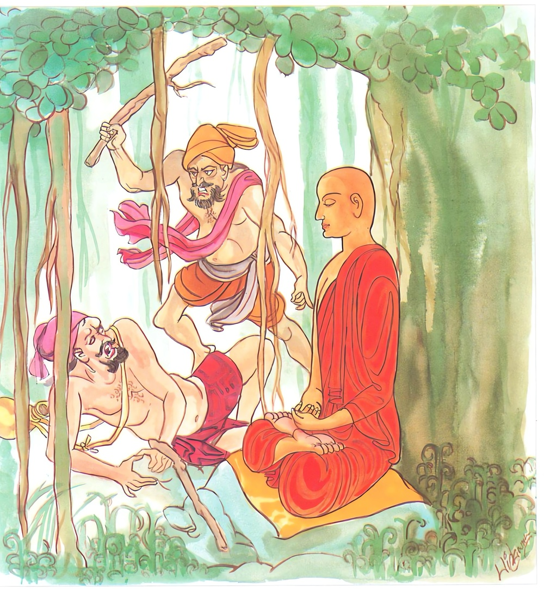

26-7 ශාරීපුත්ර මහාස්ථවිරයන්ගේ ඉවසීම
මෙම කතාව ධම්මපද අටුවාවෙන් ද කියවන්න.
න බ්රාහ්මණස්ස පහරෙය්ය නාස්ස මුඤ්චෙථ බ්රාහ්මණො
ධී බ්රාහ්මණස්ස හන්තාරං තතො ධී යස්ස මුඤ්චති.
බමුණු තෙමේ (රහත් තෙමේ) බමුණකුට (රහත්බමුණකුට හෝ ජාති බමුණකුට) පහර නො දෙන්නේ ය. බමුණු තෙම (රහත් තෙම) තමාට පහර දුන් පුද්ගලයාට කෝප නො කරන්නේ ය. බමුණහුට පහර දෙන්නහුට නින්දා වේ වා. යමෙක් තමාට පහර දුන්නහුට කෝප කෙරේ නම් ඒ පහර දුන්නහුට වඩා ඔහුට නින්දා වේ වා.

න බ්රාහ්මණස්සෙතදකිඤ්චි සෙය්යො
යදා නිසෙධො මනසො පියෙහි
යතො යතො හිංසමනො නිවත්තති
තතො තතො සම්මති මෙව දුක්ඛං.
(පහර දුන්නහුට පෙරළා පහර නොදීමය, පරොස් බසින් බිණුවහුට පෙරළා නොබිණීමය යන) මෙය රහත් බමුණුහට ස්වල්පමාත්ර වූ ද ශ්රෙයසෙක් නො වේ. යම් කලෙක්හි ක්රෝධී පුද්ගලයාගේ මනසට ප්රිය වූ ක්රෝධචිත්තෝත්පාදය කෙරෙන් යම් වැළැක්මෙක් වේ ද, මේ ක්රෝධනිග්රහය ක්ෂීණාස්රව බ්රාහ්මණයාහට ස්වල්පමාත්ර වූ ශ්රෙයසෙක් නො වේ (මහත් වූ ශ්රෙයසෙකි). යම් යම් කරුණෙකින් ක්රෝධ සිත නවතී ද, ඒ ඒ කරුණින් සසර දුක සන්හිඳේ ම ය.
දවසක් එක් තැනෙක රැස් ව සිටි මිනිස්සු “අනේ, පුදුම යි, අපගේ ආර්ය්යයන් වහන්සේ හැම එකක් ඉවසන සේක, කවුරුන් ඇණුම් බැණුම් කළ ද කවුරුන් පහර දුන්න ද ඔවුන් කිසිවකුත් කෙරෙහි ස්වල්පමාත්ර විසිනුදු උන්වහන්සේ නො කිපෙන සේකැ”යි සැරියුත් මහතෙරුන්ගේ ගුණමහත්කම ගැණ කතා කරන්නට වූහ. ඔවුන් අතර සිටි එක් බමුණෙක් මෙයසා “මේ නො කිපෙන්නා කවරෙක් දැ?”යි ඇසී ය. එ කල්හි ඔවුහු “මේ අපගේ සැරියුත් මහතෙරණුවෝ”යි කීහ. “ඔහු කිපෙන්නෙක් නො වන්නේ දැ?”ටි බමුණා ඇසූ විට “බමුණ! උන්වහන්සේ කාහටත් නො කිපෙන සේකැ”යි කීහ. එවිට බමුණු “හා හොඳ යි, ඔය කියන නො කිපෙන්නහු, මම කුප්පවාලමි”යි කීයේ ය. “පිළිවන්කම තිබේ නම් කුප්පාලව”යි කී කල්හි බමුණා “වේවා, මොහුට කරණ හැටි දන්නෙම් මමැ”යි සිතා මහතෙරුන් පිඬු සිඟා යද්දී උන්වහන්සේගේ පසු පස ගොස් මිට මොළොවා පිට හරහට මහත් පහරක් ගැසී ය. මහතෙරණුවෝ “මේ කිමැ”යි නො සලකා ම වැඩිය සේක. එකෙණෙහි බමුණාගේ මුළු සිරුර දැවෙන්නට වන. සිරුර වසා මහත් දාහයෙක් උපන. ඉක්බිති බමුණා “අනේ! මේ ආර්ය්යයන් වහන්සේ මහාගුණවතෙක් වන සේකැ”යි දු ගොස් මහතෙරුන්ගේ පාමුල වැටී “ස්වාමීනි! මට කමන්නැ”යි කියා සිටියේ ය. “ඇයි, ඒ මෙසේ කියන්නහු?”යි උන්වහන්සේ ඇසූ කල්හි “මම ඔබවහන්සේ විමසනු පිණිස ඔබවහන්සේගේ පිටට මිට මොළොවා පහරක් ගැසීමි”යි කී ය. එහි දී මහතෙරුන් “වේවා ඔබට මම කමන්නෙමි”යි කීවිට “ස්වාමීනි! මට කමන්නෝ නම් මාගේ ගෙයි වැඩ හිඳ දන් ටිකක් වළඳන සේක්වා”යි තෙරුන්ගේ පාත්රය ගත්තේ ය. උනවහන්සේ ද ඔහුට පාත්රය දුන්හ. බමුණාගේ ගෙට වැඩියහ. වැඩ බමුණා පිළියෙල කොට පිළිගැන්නූ දන් වැළඳූහ.
සැරියුත් මහතෙරුන් වහන්සේට බමුණා පහර දුන්බව අසා කෝපයට පත් මිනිස්සු “මේ බමුණු වසලයා අපගේ නිරපරාධී වූ හාමුදුරුවන් වහන්සේට පහර දෙනලදය, මූට දඬුවම් පමණක් කොට මුදා හරිණු සුදුසු නැත, මෙතැනදී ම මූ මරාදැමිය යුතු ය”යි දඬුමුගුරු ගල් ගඩොල් ගත් අත් ඇති ව බමුණා වසන ගෙට දුව ගොස් ගෙය වට කොට සිට ගත්හ. මහතෙරණුවෝ දන් වළඳා නැගිට යන්නාහු බමුණාගේ අතට පාත්රය දුන්හ. ගෙය වට කොට සිටි මිනිස්සු පාත්රයත් අතින් ගෙණ තෙරුන් සමග යන බමුණු දැක “ස්වාමීනි! ඔබවහන්සේ පාත්රය ගෙණ බමුණු නවතාලනු මැනැවැ”යි කීහ. “ඇයි, එසේ කියහු?”යි ඇසූ කල්හි “ස්වාමීනි! මේ බමුණු රොඩියා ඔබවහන්සේට පහර දෙන ලදැ යි දැන ගන්නට ලැබින, ඒ නිසා මූට කළයුත්ත කරන්නට අපට ඉඩ දුන මැනැව, පාත්රය මූගේ අතින් ගණු මැනැවැ”යි ඉල්ලා සිටියහ. එවිට උන්වහන්සේ “මොක ද, බමුණා පහර දුන්නේ මේ උපාසකවරුන්ට ද, මට දැ”යි ඇසූහ. “ඔබවහන්සේට ය”යි ඔවුහු කීහ. “හරි, කාරණය එසේ ය, එහෙත් බමුණා මා කමා කර ගත්තේ ය, මම ඔහුට කමාව දුනිමි, ඒ නිසා උපාසකවරු තම තමන්ගේ ගෙවලට යන්නැ”යි ආපසු ඔවුන් ගෙවලට යවා බමුණාත් නවතා මහතෙරණුවෝ විහාරයට වැඩියහ. ඒ වේලෙහි වෙහෙරෙ වැසි භික්ෂූන් වහන්සේලා “සැරියුත් මහතෙරණුවෝ ඒ මොහොතෙහි ම තමන්ට පහර දුන් බමුණාගේ ගෙයි හිඳ බමුණා දුන් දන් වළඳා ආහ, මූ මේ මහතෙරුන්ට මෙසේ පහර දුන්නේ නම් ඉදිරියෙහි කාහට පහර දෙන්නට ලජ්ජිතවන්නේ ද, මින් පසු මූ අන් මහණුන්ටත් පහර දෙනු ඇත, මහතෙරුන් කළේ මේ කිමෙක් දැ”යි තෙරුන්ට අවමන් කෙරෙණ ලෙසට කතා කරන්නට වූහ. බුදුරජානන් වහන්සේ ඒ වේලෙහි ඒ භික්ෂූන් රැස් ව හුන් තැනට වැඩ “මහණෙනි! තමුසේලා මෙහි රැස් ව කුමක් කතා කරහු දැ?”යි ඇසූහ. “සැරියුත් මහතෙරුන් තමන්ට පහර දුන් බමුණාගේ ගෙයි ඒ මොහොතෙහි ම දන් වළඳා දැක් වූ පහත්කම ගැණ ය”යි භික්ෂූන් කියා සිටි කල්හි “මහණෙනි! හැබෑ බමුණෙක් නම්, කවරදාකත් අන් බමුණකුට මොන හිංසාවක් ඇණුමක් බැණුමක් කළත් පහර දෙන්නේ නැත, මෙතැන, ගිහි බමුණකු විසින් හැබෑ නියම බමුණකුට පහර දීමෙක් සිදු වී තිබේ, කිසිත් කරුණක් නැති ව මේ ගිහි බමුණා නියම බමුණකුට දෙන ලද මේ පහර ඒ ගිහි බමුණාගේ සිත්හි නැගි ක්රෝධය නිසා වූයේ ය, තමන්ගේ විනාශයට තමන්ගේ සිත්හි නගිනා මේ ක්රෝධය නැසී යනුයේ අනාගාමී මාර්ගයෙනැ”යි වදාරා මේ ධර්මදේශනාව කළ සේක
න බ්රාහ්මණස්ස පහරෙය්ය නාස්ස මුඤ්චෙථ බ්රාහ්මණො,
ධි බ්රාහ්මණස්ස හන්තාරං තතො ධි යස්ස මුඤ්චති.
.
න බ්රාහ්මණස්සෙතදකිඤ්චි සෙය්යො
යදා නිසෙදො මනසො පියෙති,
යතො යතො හිංසමනො නිවත්තති
තතො තතො සම්මතිමෙව දුක්ඛන්ති.
බ්රාහ්මණ තෙමේ බ්රාහ්මණයෙකුට නො පහරන්නේ ය. බ්රාහ්මණ තෙමේ තමාට පහර ගැසුවහුට නො කිපෙන්නේ ය. බ්රාහ්මණයාහට පහර දෙන්නහුට නින්දා කරමි. යමෙක් ඒ පහර දෙන්නහුට කිපේ ද, ඒ පහර දෙන්නහුට වඩා ඔහුට නින්දා කිරමි.
මේ එකට එක නො කිරීම බ්රාහ්මණයාට ස්වල්පමාත්ර වූ උතුම් බවෙක් නො වේ. නොහොත් යම් කලෙක (ක්රෝධ කරන්නහුගේ) සිතට ප්රිය වූ ක්රෝධ සිතිවිලිවලින් යම් වැළැක්මෙක් වේ ද, මෙය බ්රාහ්මණයාහට ස්වල්පමාත්ර වූ උතුම් බවෙක් නො වේ. යම් යම් හේතුවකින් ක්රෝධචිත්තය නවතී ද ඒ ඒ හේතුවෙන් සසර දුක සන්සිඳෙන්නේ ම ය.
න බ්රාහ්මණස්ස පහරෙය්ය = බ්රාහ්මණයාහට පහර නො දෙන්නේ ය.
දෙවන පාදයෙහි පෙණෙන ‘බ්රාහ්මණො’ යනු මෙහි හෙළා ‘බ්රාහ්මණ තෙමේ බ්රාහ්මණයකුට පහර නො දෙන්නේ ය’යි අරුත් ගතයුතු ය. නැසූ ආස්රව ඇති පැහූ පව් ඇති ක්ෂීණාස්රව බ්රාහ්මණයෙක් තෙමේ එකාන්ත විසින් එබඳු බ්රාහ්මණයකුට වත් ජාතියෙන් ගෝත්රයෙන් බ්රාහ්මණැයි සම්මතවූවකුට වත් මොන ම කරුණක් නිසා හෝ අත් පා දඬු මුගුරු සැත් ආදි කිසිවකින් පහර නො දෙන්නේ ය. ඒ තබා පරොස් බස් කියා හෝ ඇණුම් බැණුම් නො කරන්නේ ය. ක්රෝධ සිතිවිල්ලක් පමණකුත් නො ද උපද වන්නේ ය. “ඛීණාසවබ්රාහ්මණොහමස්මිති ජානන්තො ඛීණාසවස්ස වා අඤ්ඤතරස්ස වා ජාතිබ්රාහ්මණස්ස න පහරෙය්”" යනු අටුවා. මෙහි “බ්රාහ්මණං පහරෙය්ය” යි යෙදිය යුතු තැන්හි “බ්රාහ්මණස්ස පහරෙය්ය”යි යෙදුනේ උපපද විභක්ති විසිනි. කාරක විභක්ති හැර පදාන්තර යෝගයෙහි කළ තාක් විභක්තීහු උපපද විභක්ති නම්. “ගාමස්ස ගතො” යනුමෙනි.
න අස්ස මුඤ්ඤෙථ බ්රාහ්මණො = බ්රාහ්මණ තෙමේ මොහුට කෝප නො කරන්නේ ය.
ක්ෂීණාස්රවබ්රාහ්මණ තෙමේ තමාට මොන ම කරුණක් නිසා හෝ පහර දුන්නහුට, ඇණුම් බැණුම් කළහුට කිසිදාත් නො කිපෙන්නේ ය. රැවුම් ගෙරවුම් නො කරන්නේ ය. “සොපි පහටො ඛීණසවො බ්රාහ්මණො අස්ස පහරිත්වා ඨිතස්ස වෙරං න මුඤ්චෙථ තස්මිං කොපං න කරෙය්ය” යනු අටුවා.
ධි බ්රාහ්මණස්ස හන්තාරං = බ්රාහ්මණයාහට පහර දෙන්නහුට නින්දා කරමි. නින්දා වේවා.
කවදාත් කිසිත් කරුණක් නිසාත් අන්හට නො කිපෙන අන්හට නො බණින ගැහුවත් නො ගහන බැන්නත් නො බණින ක්ෂීණාස්රව බ්රාහ්මණයාහට පහර දෙනුයේ දෙවියන් සහිත ලෝකයාගේ පිළිකුලට ස්ථාන වන්නේ ය. මෙලොව පරලොව දියුණුනේ ඇද වැටෙන්නේ ය. එබඳු තැනැත්තේ මෙලොව දී ම නින්දා කටයුතු ය. එහෙයින් ඔහුට නින්දා කරමි. නින්දා වේවා.
තතො ධි යො අස්ස මුඤ්චෙති = යමෙක් ඒ පහර දෙන්නහුට කිපේ ද, ඊට වඩා (ඔහුට) නින්දා කරමි. නින්දා වේවා,
යමෙක් තමාට පහර දුන්නහුට කිපේ ද, එසේ කිපියේ පහර දුන්නහුට වඩා පහත් ය. ලාමක ය. එහෙයින් පහර දුන්නහුට යමෙක් කිපේ නම් ඔහුට නින්දා කරමි. නින්දා වේවා.
න බ්රාහ්මණස්ස එතං කිඤ්චි සෙය්යො = මේ එකට එක නො කිරීම බ්රාහ්මණයාගේ ස්වල්පමාත්ර වූ උතුම් බවෙක් නො වේ.
යදා නිසෙධො මනසො පියෙහි = (නොහොත්) යම් කලෙක සිතට ප්රිය වූ ක්රෝධ සිතිවිලිවලින් (යම්) වැළැක්මෙක් වේ ද (එතං අකිඤ්චි සෙය්යො න) මෙය ස්වල්පමාත්ර වූ උතුම් බවෙක් නො වේ.
තමාට අත් පා දඬු මුගුරු ඈ යමකින් පහර දුන්නහුට පෙරළා පහර නො දීම, දෑ ගොත් කුලමල ඈ කියා ගට බිණුවහුට පෙරළා එසේ නො බිණීම රහතුන් වහන්සේගේ මහත් ගුණයෙක් වේ. එසේ නො පැහැරීම, එසේ නො බිණීම රහතුන් වහන්සේ පිළිබඳ ස්වල්පමාත්ර වූ ගුණයෙක් නො ව මහත් වූත් උතුම් වූත් ගුණයෙක් වේ. නොහොත් ක්රෝධ කරන්නහුගේ සිතට ප්රිය වූයේ ක්රෝධය ඉපදවීම ය. සිතට ප්රිය ව ඒ ක්රෝධ සිතිවිලි ඉපදවීමෙන් වැළක්ම රහතුන් වහන්සේ පිළිබඳ ඉතා මහත් ඉතා උතුම් ගුණයෙක් වේ.
මේ ක්රෝධ සිතිවිලි නිසා මිනිස්සු මවුපියනට ද පහර දෙන්නෝ ය. නොයෙක් කුලමල කියා ඇණමු බැණුම් කරන්නෝ ය. මවුපියන් මරා දමන්නෝ ය තුමූ ගෙල වැල ලා ගන්නෝ ය. බුද්ධාදී උතුමන්ට අපරාධ කරන්නෝ ය. එහෙයින් ඒ බිය උපදවන ක්රෝධ සිතිවිලිවලින් සිත වළකා ගැණීම අවශ්යයෙන් විය යුතු ම ය. සිතෙහි උපදනා ඒ ක්රෝධයට නිග්රහ කිරීම ක්රෝධයෙන් සිත වළකා ගැණීම සුලු ගුණයෙක් නො වේ. එය ඉතා ම උසස් ඉතා ම උතුම් ගුණයෙක් වේ. මේ අටුවා: “යං ඛීණාසවස්ස අක්කොසන්තං වා අප්පච්චක්කොසනං, පහරන්තං වා අප්පටිප්පහරණං එතං තස්ස ඛීණාසවබ්රාහ්මණස්ස න කිඤ්චි සෙය්යො, අප්පමත්තකම්පි සෙය්යො න හොති. කොධනස්ස හි කොධුප්පාදොව මනසො පියො නාම, තෙහි කොධුප්පාදෙහි මනුස්සා මාතාපිතුසුපි බුද්ධාදිසුපි අපරජ්ඣන්ති, තස්මා යො සො අවස්සං තෙහි මනසො නිසෙදො, කොධවසෙන උප්පජ්ජමානස්ස චිත්තස්ස නිග්ගහො, එතං න අකිඤ්චි සෙය්යො, අධිමත්තමෙව සෙය්යොති අත්ථ” යනු.
යතො යතො හිංසමතො නිවත්තති = යම් යම් කරුණෙකින් ක්රෝධචිත්තය නවතී ද.
තතො තතො සම්මති එවං දුක්ඛං = ඒ ඒ කරුණෙකින් සසර දුක සන්සිඳෙන්නේ ය.
‘හිංසමතො’ යන්නෙන් ක්රෝධචිත්තය ගැණේ. ඒ මේ ක්රෝධ චිත්තය අනාගාමී මාර්ගයෙන් ප්රහීණ වනුයේ යම් යම් කරුණෙකින් නවත්නේ වේ ද, ඒ ඒ කරුණෙන් සසරදුක සන්සිඳී යන්නේ ම ය. මේ අටුවා: “හිංසමනොති කොධමනො, යො තස්ස යතො යතො වත්ථුතො අනාගාමිමග්ගෙන සමුගඝාතං ගච්ඡන්තො නිවත්තති, තතො තතො වත්ථුතො සකලම්පි වට්ටදුක්ඛං නිවත්තතියෙව” යනු.
ධර්මදේශනාව අවසානයෙහි බොහෝ දෙන සෝවන්ඵලාදියට පැමිණියාහු ය.
ශාරීපුත්රස්ථවිර වස්තුව නිමි.